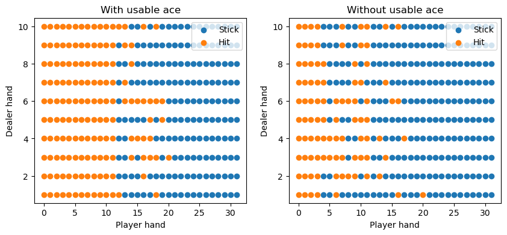
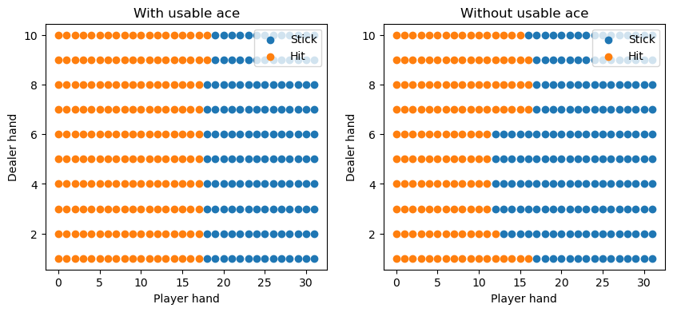
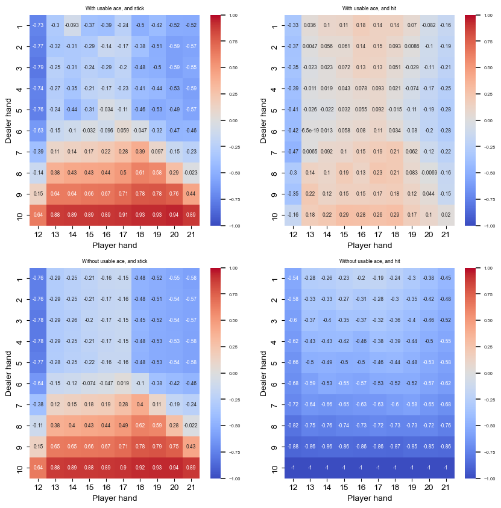

4.5. Monte Carlo control#
!pip -q install gym
import numpy as np
import matplotlib.pyplot as plt
import gym
import itertools
from MonteCarlo import *
import copy
import seaborn as sns
env = gym.make('Blackjack-v1', natural=False, sab=False)
4.5.1. Monte Carlo with exploring starts#
player_sum_range = range(32)
dealer_card_range = range(1, 11)
usable_ace_range = [True, False]
states = list(itertools.product(player_sum_range, dealer_card_range, usable_ace_range))
actions = [0, 1]
state_action_dict = {state: int(state[0] < 20) for state in states}
class stick_at_20_or_21(Policy):
def policy(self, state, epsilon=0.0):
return self.state_action_dict[state]
class MonteCarloControl:
"""
Monte Carlo Control to estimate the optimal policy
"""
def __init__(self, states, actions, policy):
"""
@param states: list
A list of available states
@param actions: list
A list of available actions
@param policy: Policy
A Policy instance with sample implemented
"""
self.states = states
self.actions = actions
self.policy = policy
def estimate(self, env, max_iter, gamma=1, every_visit=False):
"""
Estimates the value function
@param env: any
The enviroment the agent is interacting with
@param n_episodes: int
Number of episodes used
@param gamma: int
Discount factor (default=1.0)
@param every_visit: boolean
Indicates whether to use every-visit (True) or first-visit (False) Monte Carlo
@return value:
The estimated q-value fucntion of the form
{state1: value1,...}
@return policy: Policy
The optimal policy function
"""
value = {state: {action: 0 for action in self.actions} for state in self.states}
count = {state: {action: 0 for action in self.actions} for state in self.states}
for i in range(max_iter):
episode = self.policy.sample(env)
cum_reward = 0
for t, (state_action, reward) in enumerate(list(episode.items())[::-1]):
state, action = state_action
t = len(episode) - t - 1
cum_reward = gamma * cum_reward + reward
if every_visit or state not in self.states[:t]:
count[state][action] += 1
value[state][action] = value[state][action] + (cum_reward - value[state][action]) / count[state][action]
self.policy.state_action_dict[state] = max(value[state], key=value[state].get)
return value, self.policy
policy = stick_at_20_or_21(states, actions, state_action_dict)
mc = MonteCarloControl(states, actions, policy)
q_values, optimal_policy = mc.estimate(env, 5000000)
plotBlackJackOptimalStrategy(optimal_policy, states)

4.5.2. Monte Carlo with stochastic policies#
class stick_at_20_or_21_stochastic(Policy):
def policy(self, state, epsilon=0.10):
if np.random.rand() < epsilon:
return np.random.choice(self.actions)
return self.state_action_dict[state]
policy = stick_at_20_or_21_stochastic(states, actions, state_action_dict)
montecarlo = MonteCarloControl(states, actions, policy)
q_values, optimal_policy = montecarlo.estimate(env, 5000000)
plotBlackJackOptimalStrategy(optimal_policy, states, epsilon=0.0)

plot_q_values_heatmap(q_values)
